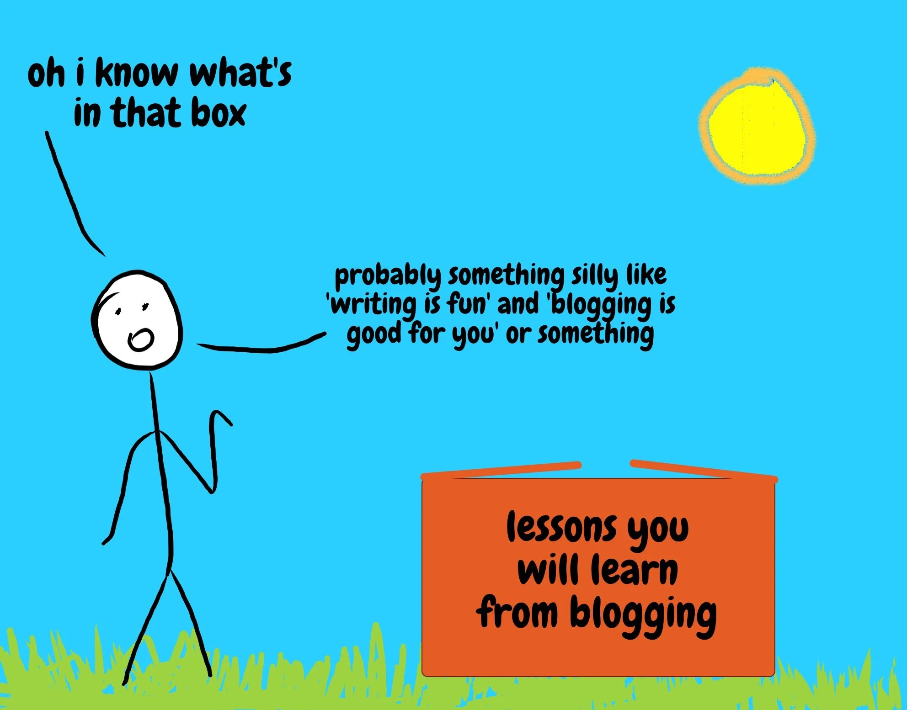
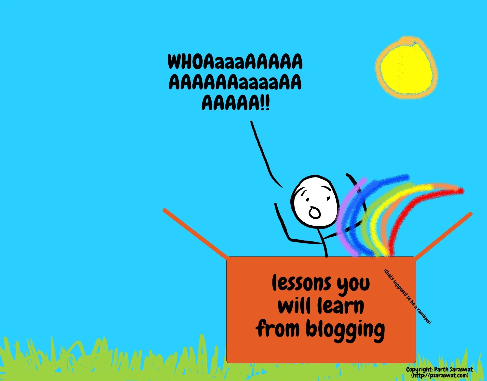
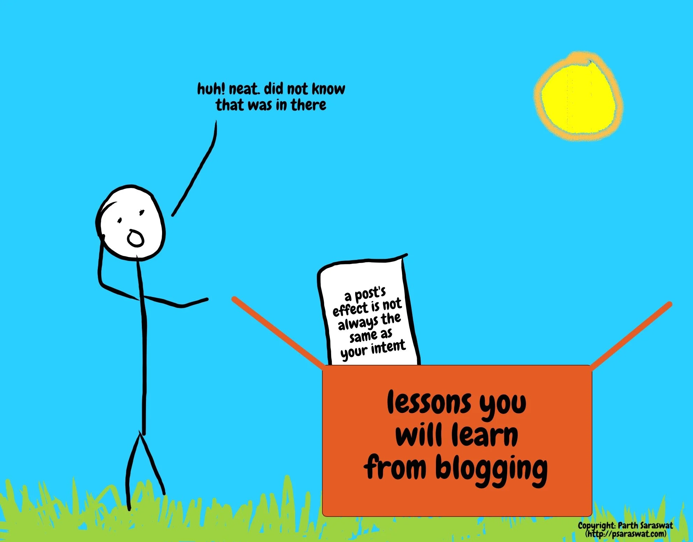
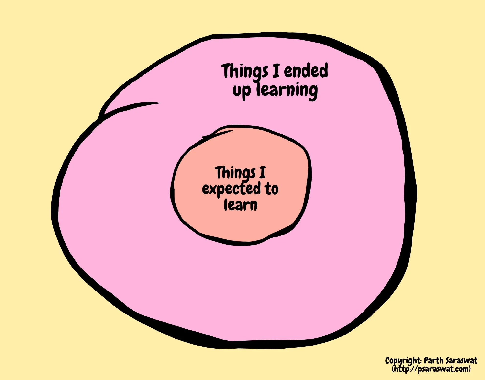
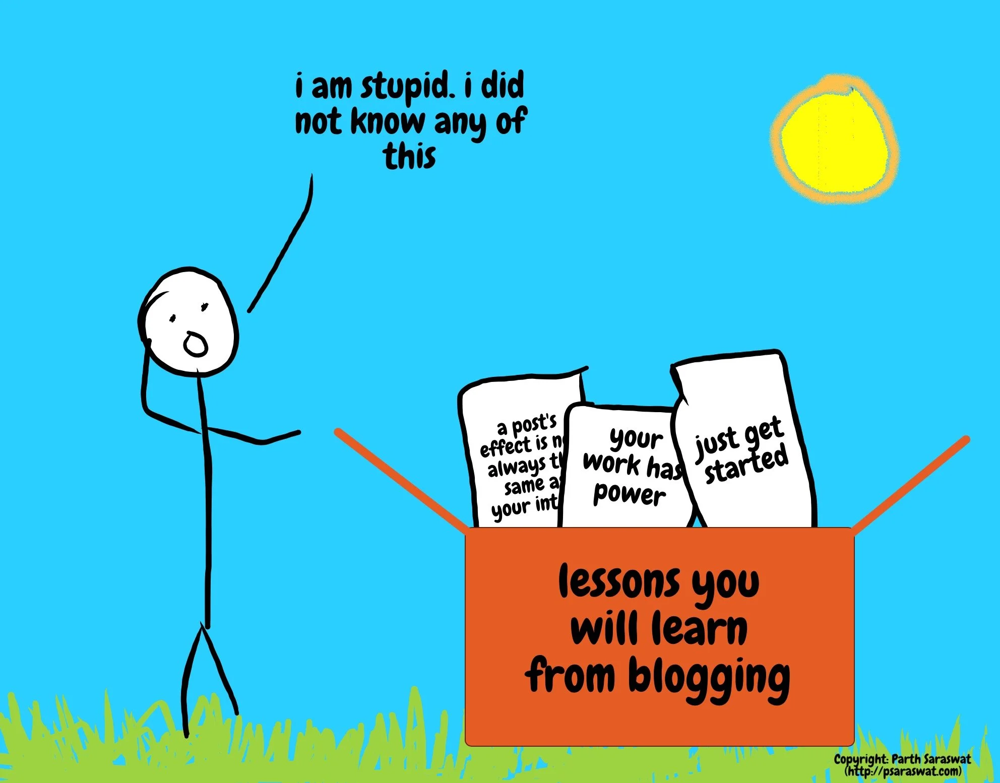

What I Learnt from Blogging
I started blogging in May 2020. I did not have a particular goal in mind, and I started without any expectations. In fact, I thought I already knew everything I could learn from blogging before I even started.

Here we are in January 2021. Having actually ‘opened up the box’ by writing ten posts, I’ve learnt so much more from blogging than I first expected. This is much closer to reality:

This is a quick post about everything I have learn from blogging for the past 7 months, and hopefully by the end of it, I can convince you to just get started with that one side project you’ve been meaning to start for a while. You know what I’m talking about. That project. Anyhoo, let’s take a trip back to May 2020, when I wrote my first post…
…the ‘blog’ started as I was about to graduate from Cornell. Putting two and two together, I put together a piece about my time in Ithaca. The post was about everything I had learnt, my experience with imposter syndrome and how it had changed me. The intention of the piece was simple: document my experience. It wasn’t meant to do anything other than act as a time capsule of my time as a Master’s student. However, writing the post had another unintended effect: offering solidarity! As the post went out, reader responses started coming in. A few readers reached out sharing how they also dealt with similar circumstances. This was the first of many experiences where a blog post’s effect was different (and much more fulfilling) from the intention of the post.
This is not to say that the original intention was lost. Over time, the post did act as a fantastic way of storing ideas and thoughts for the long term. Who knew writing = documentation?!
Next, I wrote about a framework I’d been using to learn new skills every week. A nerdy and neat idea in my head, my intention with this post was to simply start populating the blog. For all intents and purposes, this post was supposed to fly under the radar. Looks like the post missed the memo on that one. Almost every email I’ve received from a reader has spoken about how they’ve used the framework from this post for their personal use. Again, the eventual effects of the post were wildly different from the intent (in the nicest way).
The key theme after these two posts is that you don’t have any control over what the effects of your work will be. All you can do is make things and put them out there. Whatever follows is out of your hands.

Fast forward to July 2020, when I was getting ready to start my first job. Again, made sense to put all my thoughts about this into a post. At this point, I was getting better at writing posts. I had (unintentionally) developed a process for writing blog posts. Every post since this one has been a little easier, and has felt like a little less work each time. Here’s the takeaway: if you keep doing something, it will get easier. You will get better. It’s almost as if practice… makes you better??? Again, who knew.
Another sidenote: writing is so much more than putting words to paper! My 3rd post was the first time I experimented with new techniques. I added illustrations and more personality to the posts. Personality, storytelling and analogies are all things that turn a piece of work from an ‘information dump’ into something human. This is a takeaway that has helped me make my other projects better too. I would never have guessed that writing blog posts would help me in such a way. Finally, the biggest unintended (super positive) effect of this post was one of human connection – it led to conversations I wouldn’t have had otherwise. Readers reached out with stories that mirrored mine. I spoke to people about their experiences, what advice they had for me and vice versa. Solidarity is a powerful thing.
Fueled by these conversations and now aware of the power of solidarity, I wrote ‘What do I do With My Life?’. This was a post written to anyone feeling anxious about not knowing what they want to do with their lives. This post is by far my favorite out of everything I’ve written yet. It was a culmination of everything I had learnt so far. Namely: 1. solidarity is powerful, 2. how to follow a writing process to get from a tiny idea into a coherent blog post, and most of all – 3. personality and storytelling are what separate human work from information dumps. The effects of the post went far beyond anything I could have imagined. It generated the most reader responses, and each response was personal and heartfelt. This was the post that made me realise the most important lesson so far: your work has power. What started off as a simple idea in my head was now acting as a gateway for people to start talking about how they were changing their outlooks on their personal goals and lives. Your work has power!
Over the next few weeks, I wrote more ‘information dump’ posts. First, I wrote about my writing process (meta, I know). Then, about how I was keeping in touch with friends during the 2020 coronavirus pandemic. Finally, I put together a ‘getting started’ guide for people preparing to apply to graduate programs in the US. These posts did not have the powerful interpersonal and deep effects that previous posts did, but they drove value in a different way. They act as amazing FAQs. Every time I’ve gotten a question about my experience with applications or whenever I’m asked about how I write my blog posts, I simply reply with a link to the relevant blog post. Information dumps are useful!
That brings us to today, to this particular post. This post was supposed to be a simple listicle with quick bullet points about everything I’d learnt from blogging. However, as I began writing, I realized there was a lot more to talk about than a simple list of things I’d learnt. Essentially, you don’t know what a post will be until you start writing it. This final lesson can be generalized to anything you do: to figure out step 2, you need to take step 1. You don’t need to have all the details of a project figured out before you get started. Jump in and work things out as you go. Just get started!
After 7 months and 10 posts (quite a bad post/time ratio to be honest), here’s everything I’ve learnt about blogging condensed into a nutshell:
The most important thing is to get started. Sweat the details later, get started today. You cannot control what the effects of your work will be. Focus on creating solidarity with your work, throw your personality into everything you do, and always remember: your work has power.
So that’s everything I’ve learnt so far. Here’s a venn diagram of things I expected to learn and things I actually learnt.

Let’s come back to the boxes analogy from earlier in this post:

That’s the ultimate takeaway here: you don’t know what’s in the box unless you actually look in the box. So ‘open the box’ of whatever project you’ve been meaning to start. In other words, just start, and start today. Let me know if you do!
See you next week for a new post.
Thanks for reading! You can always email me to chat about this post - or anything else.
As is true for any advice or counsel you ever receive: Y.M.M.V! Your mileage may vary. Some advice can be a vice. Feel free to take what you can use, and leave the rest. There are no rules.